Exercise 9： Let GAFE be a trapezoid with AG//FE and AG=2FE. CDOE is a trapezoid with DC//OE and DC=2OE. F is the midpoint of CB. DO=OB. Prove that AG⊥DB.
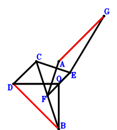
\(\because \) DC//OE and DC=2OE \(\therefore \small\overrightarrow{OE}=\dfrac{\small\overrightarrow{OC}}{2} - \dfrac{\small\overrightarrow{OD}}{2}\).\(\because \) F is the midpoint of CB \(\therefore \small\overrightarrow{OF}=\dfrac{\small\overrightarrow{OB}}{2} + \dfrac{\small\overrightarrow{OC}}{2}\).\(\because \) AG//FE and AG=2FE \(\therefore \small\overrightarrow{OG}=\small\overrightarrow{OA} - \small\overrightarrow{OB} - \small\overrightarrow{OC} + 2 \small\overrightarrow{OE}=\small\overrightarrow{OA} - \small\overrightarrow{OB} - \small\overrightarrow{OD}\).\(\because \) DO=OB \( \therefore- \small\overrightarrow{OB}^{2} + \small\overrightarrow{OD}^{2}=0.\)In conclusion, \(\small\overrightarrow{DB} \cdot \small\overrightarrow{GA}=\left(\small\overrightarrow{OA} - \small\overrightarrow{OG}\right) \cdot \left(\small\overrightarrow{OB} - \small\overrightarrow{OD}\right)=\left(\small\overrightarrow{OB} - \small\overrightarrow{OD}\right) \cdot \left(\small\overrightarrow{OB} + \small\overrightarrow{OD}\right)=\small\overrightarrow{OB}^{2} - \small\overrightarrow{OD}^{2}=0\), that is, AG⊥DB.
Exercise 13： Let GDAF be a parallelogram. FEOB is a trapezoid with FB//EO and FB=2EO. E is the midpoint of AC. DO=BO. Prove that GC⊥DB.
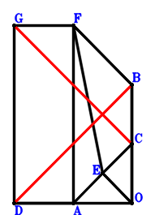
\(\because \) E is the midpoint of AC \(\therefore \small\overrightarrow{OE}=\dfrac{\small\overrightarrow{OA}}{2} + \dfrac{\small\overrightarrow{OC}}{2}\).\(\because \) FB//EO and FB=2EO \(\therefore \small\overrightarrow{OF}=\small\overrightarrow{OB} + 2 \small\overrightarrow{OE}=\small\overrightarrow{OA} + \small\overrightarrow{OB} + \small\overrightarrow{OC}\).\(\because \) GDAF is a parallelogram \(\therefore \small\overrightarrow{OG}=\small\overrightarrow{OB} + \small\overrightarrow{OC} + \small\overrightarrow{OD}\).\(\because \) DO=BO \( \therefore- \small\overrightarrow{OB}^{2} + \small\overrightarrow{OD}^{2}=0.\)In conclusion, \(\small\overrightarrow{CG} \cdot \small\overrightarrow{DB}=\left(\small\overrightarrow{OB} - \small\overrightarrow{OD}\right) \cdot \left(- \small\overrightarrow{OC} + \small\overrightarrow{OG}\right)=\left(\small\overrightarrow{OB} - \small\overrightarrow{OD}\right) \cdot \left(\small\overrightarrow{OB} + \small\overrightarrow{OD}\right)=\small\overrightarrow{OB}^{2} - \small\overrightarrow{OD}^{2}=0\), that is, GC⊥DB.
Exercise 35： Let EFCA be a parallelogram. O, E are the orthocenter and circumcenter of △ABD. DO=BO. Prove that FC⊥DB.
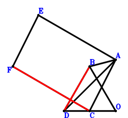
\(\because \) O, E are the orthocenter and circumcenter of △ABD \(\therefore \small\overrightarrow{OE}=\small\overrightarrow{OA} + \small\overrightarrow{OB} + \small\overrightarrow{OD}\).\(\because \) EFCA is a parallelogram \(\therefore \small\overrightarrow{OF}=\small\overrightarrow{OB} + \small\overrightarrow{OC} + \small\overrightarrow{OD}\).\(\because \) DO=BO \( \therefore- \small\overrightarrow{OB}^{2} + \small\overrightarrow{OD}^{2}=0.\)In conclusion, \(\small\overrightarrow{CF} \cdot \small\overrightarrow{DB}=\left(\small\overrightarrow{OB} - \small\overrightarrow{OD}\right) \cdot \left(- \small\overrightarrow{OC} + \small\overrightarrow{OF}\right)=\left(\small\overrightarrow{OB} - \small\overrightarrow{OD}\right) \cdot \left(\small\overrightarrow{OB} + \small\overrightarrow{OD}\right)=\small\overrightarrow{OB}^{2} - \small\overrightarrow{OD}^{2}=0\), that is, FC⊥DB.
Exercise 48： Let BCEA be a parallelogram. GCOF is a trapezoid with GC//FO and GC=2FO. F is the midpoint of DA. DO=BO. Prove that GE⊥DB.
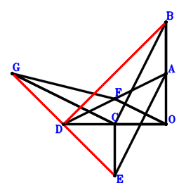
\(\because \) BCEA is a parallelogram \(\therefore \small\overrightarrow{OE}=\small\overrightarrow{OA} - \small\overrightarrow{OB} + \small\overrightarrow{OC}\).\(\because \) F is the midpoint of DA \(\therefore \small\overrightarrow{OF}=\dfrac{\small\overrightarrow{OA}}{2} + \dfrac{\small\overrightarrow{OD}}{2}\).\(\because \) GC//FO and GC=2FO \(\therefore \small\overrightarrow{OG}=\small\overrightarrow{OC} + 2 \small\overrightarrow{OF}=\small\overrightarrow{OA} + \small\overrightarrow{OC} + \small\overrightarrow{OD}\).\(\because \) DO=BO \( \therefore- \small\overrightarrow{OB}^{2} + \small\overrightarrow{OD}^{2}=0.\)In conclusion, \(\small\overrightarrow{DB} \cdot \small\overrightarrow{EG}=\left(\small\overrightarrow{OB} - \small\overrightarrow{OD}\right) \cdot \left(- \small\overrightarrow{OE} + \small\overrightarrow{OG}\right)=\left(\small\overrightarrow{OB} - \small\overrightarrow{OD}\right) \cdot \left(\small\overrightarrow{OB} + \small\overrightarrow{OD}\right)=\small\overrightarrow{OB}^{2} - \small\overrightarrow{OD}^{2}=0\), that is, GE⊥DB.
Exercise 80： Let FBAC be a parallelogram. CDOE is a trapezoid with DC//OE and DC=2OE. G is the midpoint of AF. DO=BO. Prove that GE⊥DB.
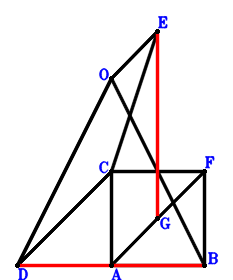
\(\because \) DC//OE and DC=2OE \(\therefore \small\overrightarrow{OE}=\dfrac{\small\overrightarrow{OC}}{2} - \dfrac{\small\overrightarrow{OD}}{2}\).\(\because \) FBAC is a parallelogram \(\therefore \small\overrightarrow{OF}=- \small\overrightarrow{OA} + \small\overrightarrow{OB} + \small\overrightarrow{OC}\).\(\because \) G is the midpoint of AF \(\therefore \small\overrightarrow{OG}=\dfrac{\small\overrightarrow{OA}}{2} + \dfrac{\small\overrightarrow{OF}}{2}=\dfrac{\small\overrightarrow{OB}}{2} + \dfrac{\small\overrightarrow{OC}}{2}\).\(\because \) DO=BO \( \therefore- \small\overrightarrow{OB}^{2} + \small\overrightarrow{OD}^{2}=0.\)In conclusion, \(\small\overrightarrow{DB} \cdot \small\overrightarrow{EG}=\left(\small\overrightarrow{OB} - \small\overrightarrow{OD}\right) \cdot \left(- \small\overrightarrow{OE} + \small\overrightarrow{OG}\right)=\left(\dfrac{\small\overrightarrow{OB}}{2} + \dfrac{\small\overrightarrow{OD}}{2}\right) \cdot \left(\small\overrightarrow{OB} - \small\overrightarrow{OD}\right)=\dfrac{\small\overrightarrow{OB}^{2}}{2} - \dfrac{\small\overrightarrow{OD}^{2}}{2}=0\), that is, GE⊥DB.
Exercise 92： Let ECAO be a trapezoid with CA//EO and CA=2EO. F is the centroid of △DCB. G, F, A are collinear and GA=3GF. OD=OB. Prove that EG⊥BD.
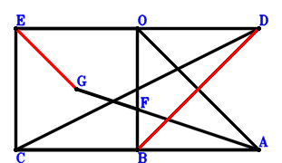
\(\because \) CA//EO and CA=2EO \(\therefore \small\overrightarrow{OE}=- \dfrac{\small\overrightarrow{OA}}{2} + \dfrac{\small\overrightarrow{OC}}{2}\).\(\because \) F is the centroid of △DCB \(\therefore \small\overrightarrow{OF}=\dfrac{\small\overrightarrow{OB}}{3} + \dfrac{\small\overrightarrow{OC}}{3} + \dfrac{\small\overrightarrow{OD}}{3}\).\(\because \) G, F, A are collinear and GA=3GF \(\therefore \small\overrightarrow{OG}=- \dfrac{\small\overrightarrow{OA}}{2} + \dfrac{3 \small\overrightarrow{OF}}{2}=- \dfrac{\small\overrightarrow{OA}}{2} + \dfrac{\small\overrightarrow{OB}}{2} + \dfrac{\small\overrightarrow{OC}}{2} + \dfrac{\small\overrightarrow{OD}}{2}\).\(\because \) OD=OB \( \therefore- \small\overrightarrow{OB}^{2} + \small\overrightarrow{OD}^{2}=0.\)In conclusion, \(\small\overrightarrow{DB} \cdot \small\overrightarrow{EG}=\left(\small\overrightarrow{OB} - \small\overrightarrow{OD}\right) \cdot \left(- \small\overrightarrow{OE} + \small\overrightarrow{OG}\right)=\left(\dfrac{\small\overrightarrow{OB}}{2} + \dfrac{\small\overrightarrow{OD}}{2}\right) \cdot \left(\small\overrightarrow{OB} - \small\overrightarrow{OD}\right)=\dfrac{\small\overrightarrow{OB}^{2}}{2} - \dfrac{\small\overrightarrow{OD}^{2}}{2}=0\), that is, EG⊥BD.
Exercise 93： Let E be the midpoint of DB. DO=BO. Prove that EO⊥DB.
\(\because \) E is the midpoint of DB \(\therefore \small\overrightarrow{OE}=\dfrac{\small\overrightarrow{OB}}{2} + \dfrac{\small\overrightarrow{OD}}{2}\).\(\because \) DO=BO \( \therefore- \small\overrightarrow{OB}^{2} + \small\overrightarrow{OD}^{2}=0.\)In conclusion, \(\small\overrightarrow{DB} \cdot \small\overrightarrow{OE}=\small\overrightarrow{OE} \cdot \left(\small\overrightarrow{OB} - \small\overrightarrow{OD}\right)=\left(\dfrac{\small\overrightarrow{OB}}{2} + \dfrac{\small\overrightarrow{OD}}{2}\right) \cdot \left(\small\overrightarrow{OB} - \small\overrightarrow{OD}\right)=\dfrac{\small\overrightarrow{OB}^{2}}{2} - \dfrac{\small\overrightarrow{OD}^{2}}{2}=0\), that is, EO⊥DB.
Exercise 100： Let E be the centroid of △DBC. F, E, C are collinear and FC=3FE. DO=BO. Prove that FO⊥DB.
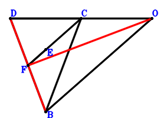
\(\because \) E is the centroid of △DBC \(\therefore \small\overrightarrow{OE}=\dfrac{\small\overrightarrow{OB}}{3} + \dfrac{\small\overrightarrow{OC}}{3} + \dfrac{\small\overrightarrow{OD}}{3}\).\(\because \) F, E, C are collinear and FC=3FE \(\therefore \small\overrightarrow{OF}=- \dfrac{\small\overrightarrow{OC}}{2} + \dfrac{3 \small\overrightarrow{OE}}{2}=\dfrac{\small\overrightarrow{OB}}{2} + \dfrac{\small\overrightarrow{OD}}{2}\).\(\because \) DO=BO \( \therefore- \small\overrightarrow{OB}^{2} + \small\overrightarrow{OD}^{2}=0.\)In conclusion, \(\small\overrightarrow{DB} \cdot \small\overrightarrow{OF}=\small\overrightarrow{OF} \cdot \left(\small\overrightarrow{OB} - \small\overrightarrow{OD}\right)=\left(\dfrac{\small\overrightarrow{OB}}{2} + \dfrac{\small\overrightarrow{OD}}{2}\right) \cdot \left(\small\overrightarrow{OB} - \small\overrightarrow{OD}\right)=\dfrac{\small\overrightarrow{OB}^{2}}{2} - \dfrac{\small\overrightarrow{OD}^{2}}{2}=0\), that is, FO⊥DB.
Exercise 103： Let O, E be the orthocenter and circumcenter of △CBD. OD=OB. Prove that CE⊥BD.
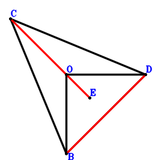
\(\because \) O, E are the orthocenter and circumcenter of △CBD \(\therefore \small\overrightarrow{OE}=\small\overrightarrow{OB} + \small\overrightarrow{OC} + \small\overrightarrow{OD}\).\(\because \) OD=OB \( \therefore- \small\overrightarrow{OB}^{2} + \small\overrightarrow{OD}^{2}=0.\)In conclusion, \(\small\overrightarrow{CE} \cdot \small\overrightarrow{DB}=\left(\small\overrightarrow{OB} - \small\overrightarrow{OD}\right) \cdot \left(- \small\overrightarrow{OC} + \small\overrightarrow{OE}\right)=\left(\small\overrightarrow{OB} - \small\overrightarrow{OD}\right) \cdot \left(\small\overrightarrow{OB} + \small\overrightarrow{OD}\right)=\small\overrightarrow{OB}^{2} - \small\overrightarrow{OD}^{2}=0\), that is, CE⊥BD.
Exercise 106： Let CEOF be a trapezoid with CF//EO and CF=2EO. G, E, H are the midpoints of AF, DA, BC, respectively. DO=BO. Prove that HG⊥DB.
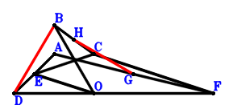
\(\because \) E is the midpoint of DA \(\therefore \small\overrightarrow{OE}=\dfrac{\small\overrightarrow{OA}}{2} + \dfrac{\small\overrightarrow{OD}}{2}\).\(\because \) CF//EO and CF=2EO \(\therefore \small\overrightarrow{OF}=\small\overrightarrow{OC} - 2 \small\overrightarrow{OE}=- \small\overrightarrow{OA} + \small\overrightarrow{OC} - \small\overrightarrow{OD}\).\(\because \) G is the midpoint of AF \(\therefore \small\overrightarrow{OG}=\dfrac{\small\overrightarrow{OA}}{2} + \dfrac{\small\overrightarrow{OF}}{2}=\dfrac{\small\overrightarrow{OC}}{2} - \dfrac{\small\overrightarrow{OD}}{2}\).\(\because \) H is the midpoint of BC \(\therefore \small\overrightarrow{OH}=\dfrac{\small\overrightarrow{OB}}{2} + \dfrac{\small\overrightarrow{OC}}{2}\).\(\because \) DO=BO \( \therefore- \small\overrightarrow{OB}^{2} + \small\overrightarrow{OD}^{2}=0.\)In conclusion, \(\small\overrightarrow{DB} \cdot \small\overrightarrow{GH}=\left(\small\overrightarrow{OB} - \small\overrightarrow{OD}\right) \cdot \left(- \small\overrightarrow{OG} + \small\overrightarrow{OH}\right)=\left(\dfrac{\small\overrightarrow{OB}}{2} + \dfrac{\small\overrightarrow{OD}}{2}\right) \cdot \left(\small\overrightarrow{OB} - \small\overrightarrow{OD}\right)=\dfrac{\small\overrightarrow{OB}^{2}}{2} - \dfrac{\small\overrightarrow{OD}^{2}}{2}=0\), that is, HG⊥DB.
Exercise 129： Let BCFE be a trapezoid with CB//FE and CB=2FE. ADOE is a trapezoid with DA//OE and DA=2OE. G is the midpoint of CA. DO=BO. Prove that GF⊥DB.
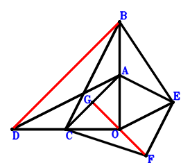
\(\because \) DA//OE and DA=2OE \(\therefore \small\overrightarrow{OE}=\dfrac{\small\overrightarrow{OA}}{2} - \dfrac{\small\overrightarrow{OD}}{2}\).\(\because \) CB//FE and CB=2FE \(\therefore \small\overrightarrow{OF}=\dfrac{\small\overrightarrow{OA}}{2} - \dfrac{\small\overrightarrow{OB}}{2} + \dfrac{\small\overrightarrow{OC}}{2} - \dfrac{\small\overrightarrow{OD}}{2}\).\(\because \) G is the midpoint of CA \(\therefore \small\overrightarrow{OG}=\dfrac{\small\overrightarrow{OA}}{2} + \dfrac{\small\overrightarrow{OC}}{2}\).\(\because \) DO=BO \( \therefore- \small\overrightarrow{OB}^{2} + \small\overrightarrow{OD}^{2}=0.\)In conclusion, \(\small\overrightarrow{DB} \cdot \small\overrightarrow{FG}=\left(\small\overrightarrow{OB} - \small\overrightarrow{OD}\right) \cdot \left(- \small\overrightarrow{OF} + \small\overrightarrow{OG}\right)=\left(\dfrac{\small\overrightarrow{OB}}{2} + \dfrac{\small\overrightarrow{OD}}{2}\right) \cdot \left(\small\overrightarrow{OB} - \small\overrightarrow{OD}\right)=\dfrac{\small\overrightarrow{OB}^{2}}{2} - \dfrac{\small\overrightarrow{OD}^{2}}{2}=0\), that is, GF⊥DB.
Exercise 137： Let EDCB be a parallelogram. EOFA is a trapezoid with EA//OF and EA=2OF. G is the midpoint of CA. DO=BO. Prove that GF⊥DB.
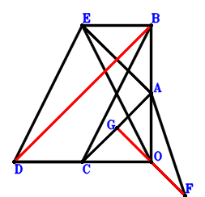
\(\because \) EDCB is a parallelogram \(\therefore \small\overrightarrow{OE}=\small\overrightarrow{OB} - \small\overrightarrow{OC} + \small\overrightarrow{OD}\).\(\because \) EA//OF and EA=2OF \(\therefore \small\overrightarrow{OF}=\dfrac{\small\overrightarrow{OA}}{2} - \dfrac{\small\overrightarrow{OE}}{2}=\dfrac{\small\overrightarrow{OA}}{2} - \dfrac{\small\overrightarrow{OB}}{2} + \dfrac{\small\overrightarrow{OC}}{2} - \dfrac{\small\overrightarrow{OD}}{2}\).\(\because \) G is the midpoint of CA \(\therefore \small\overrightarrow{OG}=\dfrac{\small\overrightarrow{OA}}{2} + \dfrac{\small\overrightarrow{OC}}{2}\).\(\because \) DO=BO \( \therefore- \small\overrightarrow{OB}^{2} + \small\overrightarrow{OD}^{2}=0.\)In conclusion, \(\small\overrightarrow{DB} \cdot \small\overrightarrow{FG}=\left(\small\overrightarrow{OB} - \small\overrightarrow{OD}\right) \cdot \left(- \small\overrightarrow{OF} + \small\overrightarrow{OG}\right)=\left(\dfrac{\small\overrightarrow{OB}}{2} + \dfrac{\small\overrightarrow{OD}}{2}\right) \cdot \left(\small\overrightarrow{OB} - \small\overrightarrow{OD}\right)=\dfrac{\small\overrightarrow{OB}^{2}}{2} - \dfrac{\small\overrightarrow{OD}^{2}}{2}=0\), that is, GF⊥DB.
Exercise 147： Let EFOG be a parallelogram. F, H, E are the midpoints of DA, CB, AC, respectively. DO=OB. Prove that HG⊥DB.
\(\because \) E is the midpoint of AC \(\therefore \small\overrightarrow{OE}=\dfrac{\small\overrightarrow{OA}}{2} + \dfrac{\small\overrightarrow{OC}}{2}\).\(\because \) F is the midpoint of DA \(\therefore \small\overrightarrow{OF}=\dfrac{\small\overrightarrow{OA}}{2} + \dfrac{\small\overrightarrow{OD}}{2}\).\(\because \) EFOG is a parallelogram \(\therefore \small\overrightarrow{OG}=\dfrac{\small\overrightarrow{OA}}{2} + \dfrac{\small\overrightarrow{OC}}{2} - \small\overrightarrow{OF}=\dfrac{\small\overrightarrow{OC}}{2} - \dfrac{\small\overrightarrow{OD}}{2}\).\(\because \) H is the midpoint of CB \(\therefore \small\overrightarrow{OH}=\dfrac{\small\overrightarrow{OB}}{2} + \dfrac{\small\overrightarrow{OC}}{2}\).\(\because \) DO=OB \( \therefore- \small\overrightarrow{OB}^{2} + \small\overrightarrow{OD}^{2}=0.\)In conclusion, \(\small\overrightarrow{DB} \cdot \small\overrightarrow{GH}=\left(\small\overrightarrow{OB} - \small\overrightarrow{OD}\right) \cdot \left(- \small\overrightarrow{OG} + \small\overrightarrow{OH}\right)=\left(\dfrac{\small\overrightarrow{OB}}{2} + \dfrac{\small\overrightarrow{OD}}{2}\right) \cdot \left(\small\overrightarrow{OB} - \small\overrightarrow{OD}\right)=\dfrac{\small\overrightarrow{OB}^{2}}{2} - \dfrac{\small\overrightarrow{OD}^{2}}{2}=0\), that is, HG⊥DB.
Exercise 152： Let EOBA be a trapezoid with AB//EO and AB=2EO. F is the midpoint of AD. OD=OB. Prove that EF⊥BD.
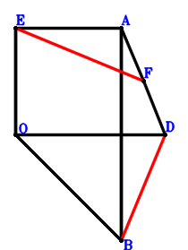
\(\because \) AB//EO and AB=2EO \(\therefore \small\overrightarrow{OE}=\dfrac{\small\overrightarrow{OA}}{2} - \dfrac{\small\overrightarrow{OB}}{2}\).\(\because \) F is the midpoint of AD \(\therefore \small\overrightarrow{OF}=\dfrac{\small\overrightarrow{OA}}{2} + \dfrac{\small\overrightarrow{OD}}{2}\).\(\because \) OD=OB \( \therefore- \small\overrightarrow{OB}^{2} + \small\overrightarrow{OD}^{2}=0.\)In conclusion, \(\small\overrightarrow{DB} \cdot \small\overrightarrow{EF}=\left(\small\overrightarrow{OB} - \small\overrightarrow{OD}\right) \cdot \left(- \small\overrightarrow{OE} + \small\overrightarrow{OF}\right)=\left(\dfrac{\small\overrightarrow{OB}}{2} + \dfrac{\small\overrightarrow{OD}}{2}\right) \cdot \left(\small\overrightarrow{OB} - \small\overrightarrow{OD}\right)=\dfrac{\small\overrightarrow{OB}^{2}}{2} - \dfrac{\small\overrightarrow{OD}^{2}}{2}=0\), that is, EF⊥BD.
Exercise 156： Let EABC be a parallelogram. O, F are the orthocenter and circumcenter of △CAD. DO=OB. Prove that FE⊥DB.
\(\because \) EABC is a parallelogram \(\therefore \small\overrightarrow{OE}=\small\overrightarrow{OA} - \small\overrightarrow{OB} + \small\overrightarrow{OC}\).\(\because \) O, F are the orthocenter and circumcenter of △CAD \(\therefore \small\overrightarrow{OF}=\small\overrightarrow{OA} + \small\overrightarrow{OC} + \small\overrightarrow{OD}\).\(\because \) DO=OB \( \therefore- \small\overrightarrow{OB}^{2} + \small\overrightarrow{OD}^{2}=0.\)In conclusion, \(\small\overrightarrow{DB} \cdot \small\overrightarrow{EF}=\left(\small\overrightarrow{OB} - \small\overrightarrow{OD}\right) \cdot \left(- \small\overrightarrow{OE} + \small\overrightarrow{OF}\right)=\left(\small\overrightarrow{OB} - \small\overrightarrow{OD}\right) \cdot \left(\small\overrightarrow{OB} + \small\overrightarrow{OD}\right)=\small\overrightarrow{OB}^{2} - \small\overrightarrow{OD}^{2}=0\), that is, FE⊥DB.
Exercise 167： Let EFGC be a trapezoid with CG//EF and CG=2EF. E is the midpoint of AC. F is the midpoint of AG and DB. DO=OB. Prove that FO⊥DB.
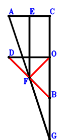
\(\because \) E is the midpoint of AC \(\therefore \small\overrightarrow{OE}=\dfrac{\small\overrightarrow{OA}}{2} + \dfrac{\small\overrightarrow{OC}}{2}\).\(\because \) F is the midpoint of DB \(\therefore \small\overrightarrow{OF}=\dfrac{\small\overrightarrow{OB}}{2} + \dfrac{\small\overrightarrow{OD}}{2}\).\(\because \) CG//EF and CG=2EF \(\therefore \small\overrightarrow{OG}=- \small\overrightarrow{OA} + 2 \small\overrightarrow{OF}=- \small\overrightarrow{OA} + \small\overrightarrow{OB} + \small\overrightarrow{OD}\).\(\because \) F is the midpoint of AG \( \therefore- \small\overrightarrow{OB}^{2} + \small\overrightarrow{OD}^{2}=0.\)In conclusion, \(\small\overrightarrow{DB} \cdot \small\overrightarrow{OF}=\small\overrightarrow{OF} \cdot \left(\small\overrightarrow{OB} - \small\overrightarrow{OD}\right)=\left(\dfrac{\small\overrightarrow{OB}}{2} + \dfrac{\small\overrightarrow{OD}}{2}\right) \cdot \left(\small\overrightarrow{OB} - \small\overrightarrow{OD}\right)=\dfrac{\small\overrightarrow{OB}^{2}}{2} - \dfrac{\small\overrightarrow{OD}^{2}}{2}=0\), that is, FO⊥DB.
Exercise 183： Let HGOF be a parallelogram. E, G, F are the midpoints of AC, DC, BA, respectively. DO=BO. Prove that HE⊥DB.
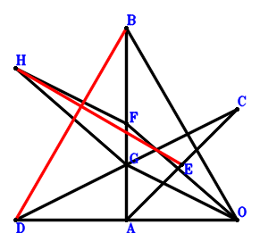
\(\because \) E is the midpoint of AC \(\therefore \small\overrightarrow{OE}=\dfrac{\small\overrightarrow{OA}}{2} + \dfrac{\small\overrightarrow{OC}}{2}\).\(\because \) F is the midpoint of BA \(\therefore \small\overrightarrow{OF}=\dfrac{\small\overrightarrow{OA}}{2} + \dfrac{\small\overrightarrow{OB}}{2}\).\(\because \) G is the midpoint of DC \(\therefore \small\overrightarrow{OG}=\dfrac{\small\overrightarrow{OC}}{2} + \dfrac{\small\overrightarrow{OD}}{2}\).\(\because \) HGOF is a parallelogram \(\therefore \small\overrightarrow{OH}=\dfrac{\small\overrightarrow{OA}}{2} + \dfrac{\small\overrightarrow{OB}}{2} + \dfrac{\small\overrightarrow{OC}}{2} + \dfrac{\small\overrightarrow{OD}}{2}\).\(\because \) DO=BO \( \therefore- \small\overrightarrow{OB}^{2} + \small\overrightarrow{OD}^{2}=0.\)In conclusion, \(\small\overrightarrow{DB} \cdot \small\overrightarrow{EH}=\left(\small\overrightarrow{OB} - \small\overrightarrow{OD}\right) \cdot \left(- \small\overrightarrow{OE} + \small\overrightarrow{OH}\right)=\left(\dfrac{\small\overrightarrow{OB}}{2} + \dfrac{\small\overrightarrow{OD}}{2}\right) \cdot \left(\small\overrightarrow{OB} - \small\overrightarrow{OD}\right)=\dfrac{\small\overrightarrow{OB}^{2}}{2} - \dfrac{\small\overrightarrow{OD}^{2}}{2}=0\), that is, HE⊥DB.
Exercise 192： Let DEAC and FEAB be parallelograms. G is the midpoint of FC. DO=BO. Prove that DB⊥GO.
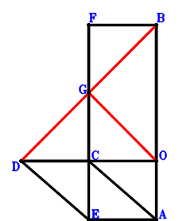
\(\because \) DEAC is a parallelogram \(\therefore \small\overrightarrow{OE}=\small\overrightarrow{OA} - \small\overrightarrow{OC} + \small\overrightarrow{OD}\).\(\because \) FEAB is a parallelogram \(\therefore \small\overrightarrow{OF}=\small\overrightarrow{OB} - \small\overrightarrow{OC} + \small\overrightarrow{OD}\).\(\because \) G is the midpoint of FC \(\therefore \small\overrightarrow{OG}=\dfrac{\small\overrightarrow{OC}}{2} + \dfrac{\small\overrightarrow{OF}}{2}=\dfrac{\small\overrightarrow{OB}}{2} + \dfrac{\small\overrightarrow{OD}}{2}\).\(\because \) DO=BO \( \therefore- \small\overrightarrow{OB}^{2} + \small\overrightarrow{OD}^{2}=0.\)In conclusion, \(\small\overrightarrow{DB} \cdot \small\overrightarrow{OG}=\small\overrightarrow{OG} \cdot \left(\small\overrightarrow{OB} - \small\overrightarrow{OD}\right)=\left(\dfrac{\small\overrightarrow{OB}}{2} + \dfrac{\small\overrightarrow{OD}}{2}\right) \cdot \left(\small\overrightarrow{OB} - \small\overrightarrow{OD}\right)=\dfrac{\small\overrightarrow{OB}^{2}}{2} - \dfrac{\small\overrightarrow{OD}^{2}}{2}=0\), that is, DB⊥GO.
Exercise 206： Let EBCA be a parallelogram. F is the centroid of △ECD. G, F, A are collinear and GA=3GF. OD=BO. Prove that OG⊥BD.
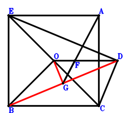
\(\because \) EBCA is a parallelogram \(\therefore \small\overrightarrow{OE}=\small\overrightarrow{OA} + \small\overrightarrow{OB} - \small\overrightarrow{OC}\).\(\because \) F is the centroid of △ECD \(\therefore \small\overrightarrow{OF}=\dfrac{\small\overrightarrow{OC}}{3} + \dfrac{\small\overrightarrow{OD}}{3} + \dfrac{\small\overrightarrow{OE}}{3}=\dfrac{\small\overrightarrow{OA}}{3} + \dfrac{\small\overrightarrow{OB}}{3} + \dfrac{\small\overrightarrow{OD}}{3}\).\(\because \) G, F, A are collinear and GA=3GF \(\therefore \small\overrightarrow{OG}=- \dfrac{\small\overrightarrow{OA}}{2} + \dfrac{3 \small\overrightarrow{OF}}{2}=\dfrac{\small\overrightarrow{OB}}{2} + \dfrac{\small\overrightarrow{OD}}{2}\).\(\because \) OD=BO \( \therefore- \small\overrightarrow{OB}^{2} + \small\overrightarrow{OD}^{2}=0.\)In conclusion, \(\small\overrightarrow{DB} \cdot \small\overrightarrow{OG}=\small\overrightarrow{OG} \cdot \left(\small\overrightarrow{OB} - \small\overrightarrow{OD}\right)=\left(\dfrac{\small\overrightarrow{OB}}{2} + \dfrac{\small\overrightarrow{OD}}{2}\right) \cdot \left(\small\overrightarrow{OB} - \small\overrightarrow{OD}\right)=\dfrac{\small\overrightarrow{OB}^{2}}{2} - \dfrac{\small\overrightarrow{OD}^{2}}{2}=0\), that is, OG⊥BD.
Exercise 210： Let BFEA be a trapezoid with AB//EF and AB=3EF. E is the centroid of △CDA. G, F, C are collinear and GC=3GF. DO=BO. Prove that GO⊥DB.
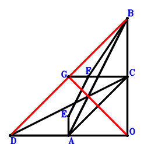
\(\because \) E is the centroid of △CDA \(\therefore \small\overrightarrow{OE}=\dfrac{\small\overrightarrow{OA}}{3} + \dfrac{\small\overrightarrow{OC}}{3} + \dfrac{\small\overrightarrow{OD}}{3}\).\(\because \) AB//EF and AB=3EF \(\therefore \small\overrightarrow{OF}=\dfrac{\small\overrightarrow{OB}}{3} + \dfrac{\small\overrightarrow{OC}}{3} + \dfrac{\small\overrightarrow{OD}}{3}\).\(\because \) G, F, C are collinear and GC=3GF \(\therefore \small\overrightarrow{OG}=- \dfrac{\small\overrightarrow{OC}}{2} + \dfrac{3 \small\overrightarrow{OF}}{2}=\dfrac{\small\overrightarrow{OB}}{2} + \dfrac{\small\overrightarrow{OD}}{2}\).\(\because \) DO=BO \( \therefore- \small\overrightarrow{OB}^{2} + \small\overrightarrow{OD}^{2}=0.\)In conclusion, \(\small\overrightarrow{DB} \cdot \small\overrightarrow{OG}=\small\overrightarrow{OG} \cdot \left(\small\overrightarrow{OB} - \small\overrightarrow{OD}\right)=\left(\dfrac{\small\overrightarrow{OB}}{2} + \dfrac{\small\overrightarrow{OD}}{2}\right) \cdot \left(\small\overrightarrow{OB} - \small\overrightarrow{OD}\right)=\dfrac{\small\overrightarrow{OB}^{2}}{2} - \dfrac{\small\overrightarrow{OD}^{2}}{2}=0\), that is, GO⊥DB.